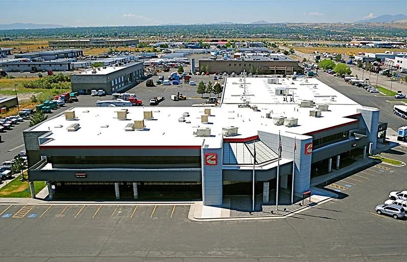

Request Free Quote!
Flat Roof in Utah
We work with various roof types at American Roofing, including flat roofs. While flat roofs are most commonly seen in commercial buildings, our contractors also have extensive experience installing and repairing them for apartments, condominiums, and other residential buildings in the Greater Salt Lake area. Here are some benefits of having a flat roof and the many styles and materials available.





Flat Roofing Types And Materials
Our local flat roof specialists handle a wide range of roof types and materials, including:
Membrane Roofing: These are installed as thin sheets of plastic or elastomeric membranes glued onto the roof. Modified bitumen, thermoplastic polyolefin, PVC, and synthetic rubber are common membrane roofing materials. Some common flat roof materials include:
- Modified bitumen: Modified bitumen is a high-performance roofing material composed of asphalt reinforced with modifiers like polymers or rubber. This blend enhances the durability, elasticity, and weather resistance of traditional bitumen
- Thermoplastic polyolefin: Thermoplastic polyolefin (TPO) is a versatile roofing material renowned for its durability and energy efficiency. Composed of a blend of polypropylene and ethylene-propylene rubber, TPO roofing membranes are known for their resistance to UV rays, chemicals, and punctures.
- PVC: PVC is known for its exceptional durability, weather resistance, and energy efficiency, offering a watertight seal and resistance to UV radiation and chemicals. Our PVC roof repair services restore seams, flashing, and surface damage.
- Synthetic rubber: Synthetic rubber roofing material, commonly made from compounds like ethylene propylene diene monomer (EPDM), provides a flexible and durable solution that withstands harsh environmental conditions. Our team specializes in rubber roof repair to address any issues.
Built-Up Roof: This traditional flat roofing method involves applying alternating layers of roofing felt (typically made of fiberglass) and asphalt. The top layer of asphalt is then covered in gravel or other chipped stones, providing sunlight and weather protection.
Benefits of a Flat Roof in Utah
Some of the main advantages of having a flat roof installed include:
Easy Installation and Repairs: Since there’s less chance of sliding off during installation, flat roofs are easier to replace and repair than pitched roofs.
Additional Space: You can turn the flat roof into a rooftop patio, an excellent place to relax and entertain guests.
Low Maintenance: Compared to a pitched roof, a flat roof’s ease of access ensures quick repairs with minimal specialized equipment.
Flat Roof Repair vs Flat Roof Replacement
Flat roof repair typically involves identifying and fixing specific issues such as leaks, punctures, or damaged flashing. The process generally includes cleaning the affected area, applying patching materials or sealants, and addressing any underlying structural concerns.
In contrast, flat roof replacement involves a more extensive process of removing the existing roofing material, inspecting the underlying structure, and then installing a new roofing system. This may include adding insulation or making structural repairs before applying the new roofing material.
Why Choose American Roofing
American Roofing’s use of premium materials for flat roof installation guarantees durable, weather-resistant flat roofs that stand the test of time. American Roofing goes beyond just fixing the visible issues; we assess the overall integrity of the flat roof, addressing any underlying structural concerns that may contribute to leaks. With a reputation built on trust, reliability, and craftsmanship, American Roofing is a trustworthy choice for those seeking flat roofing services from your local roofing contractor.
Request a Quote for Flat Roof Services
American Roofing offers decades of expertise in residential and commercial roofing, including flat roof repairs and replacements. Our crew members are licensed, insured, and extremely skilled at their job, ensuring every customer is satisfied with our service.
Request a free estimate online or call our office at (801) 269-1276 for other service inquiries.